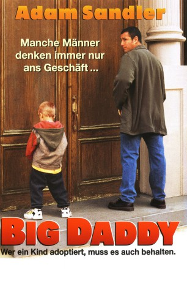
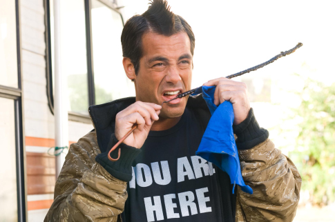
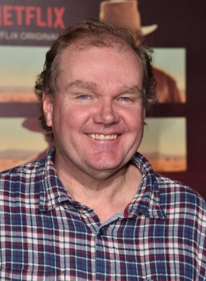
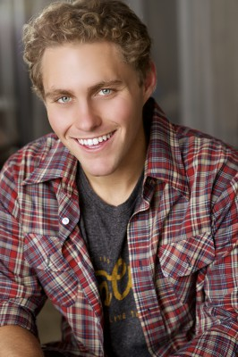

#9066 Big Daddy
 
 IMDB-Wertung: 6.4 / 10
IMDB-Wertung: 6.4 / 10  Tomatometer: 40
Tomatometer: 40  Metascore: 0
Metascore: 0 
Der faul in den Tag hineinlebende Sonny Koufax - er lebt von 200.000 Dollar, die ihm als Opfer eines Verkehrsunfalls zugesprochen wurden - nimmt den fünfjährigen Julian auf, den sein verreister Zimmerkollege einfach bei ihm deponiert hat. Zunächst über seinen neuen Mitbewohner alles andere als glücklich, schließt der vermeintliche Nichtsnutz den naseweisen Jungen schnell in sein gutmütiges Herz. Damit nimmt jedoch das Chaos seinen Lauf, denn - wie nicht anders zu erwarten - sind Sonnys Erziehungsmethoden nicht gerade die feinsten...
Jahr: 1999
Dauer: 89 Minuten
FSK: 0
Land: USA Studio: Columbia PicturesTonspuren:
Untertitel:
Auflösung: 1080p (1920x1078) Größe: 6942 MB
Genre: Drama, Komödie
Regisseur:  Dennis Dugan
Dennis Dugan
Drehbuch: Charles Barker
Soundtrack: Teddy Castellucci
Darsteller:
 Adam Sandler als Sonny Koufax
Adam Sandler als Sonny Koufax- Joey Lauren Adams als Layla Maloney
 Jon Stewart als Kevin Gerrity
Jon Stewart als Kevin Gerrity- Cole Sprouse als Julian 'Frankenstien' McGrath
- Dylan Sprouse als Julian 'Frankenstien' McGrath
 Josh Mostel als Arthur Brooks
Josh Mostel als Arthur Brooks Leslie Mann als Corinne Maloney
Leslie Mann als Corinne Maloney Allen Covert als Phil D'Amato
Allen Covert als Phil D'Amato Rob Schneider als Delivery Guy
Rob Schneider als Delivery Guy Kristy Swanson als Vanessa
Kristy Swanson als Vanessa Joseph Bologna als Lenny Koufax
Joseph Bologna als Lenny Koufax-  Peter Dante als Tommy Grayton
 Jonathan Loughran als Mike
Jonathan Loughran als Mike Steve Buscemi als Homeless Guy
Steve Buscemi als Homeless Guy-  Tim Herlihy als Singing Kangaroo
 Edmund Lyndeck als Mr. Herlihy
Edmund Lyndeck als Mr. Herlihy- Larkin Malloy als Restaurant Owner
 Neal Huff als Customer
Neal Huff als Customer- Geoffrey Horne als Sid
- Greg Haberny als NYU Student
 Jackie Sandler als Waitress
Jackie Sandler als Waitress- George Hall als Elderly Driver
-  Jared Sandler als Jared
- Carmen De Lavallade als Judge
 Steven Brill als Castellucci
Steven Brill als Castellucci- Deborah S. Craig als Paralegal
 Al Cerullo als Helicopter Pilot
Al Cerullo als Helicopter Pilot- Diana Berry als Waitress in Bistro (uncredited)
- Dar Billingham als Hooter's Girl (uncredited)
- David Seth Cohen als Skater Guy in Washington Square Park (uncredited)
 Dennis Dugan als Reluctant Trick-or-Treat Giver (uncredited)
Dennis Dugan als Reluctant Trick-or-Treat Giver (uncredited)- Laurie Wallace als Hooters Waitress (uncredited)
- Samantha Brown als Employee
- Peggy Shay als Lady at Tollbooth
- Alfonso Ramírez als George
- Salvatore Cavaliere als Angry Motorist
- Kelly Dugan als Kelly
- Jillian Sandler als Jillian
- Helen Lloyd Breed als Ms. Foote
- Chloé Hult als Schoolteacher
- Glen Trotiner als Bailiff
- Jorge Buccio als Jorge Buccio
- Cat Jagar als Receptionist
- Nicholas Taylor als Older Kid
- Cole Hawkins als Cole
- Gabriel Jacobs als Jeff
- Michael Arcate als Broken Arm Kid
- Gaetano Lisi als Hot Dog Vendor
- Michael Giarraputo als Hoboken Motorist
- Steve Glenn als Guy at Party
Datei: X:\1999\Big Daddy (1999, FSK0, 1920x1078).mkv seit 19.07.2018
Festplatte: HD 1996-2002
 Es gibt insgesamt 81 Filme in der Gruppe '1999'
Es gibt insgesamt 81 Filme in der Gruppe '1999'